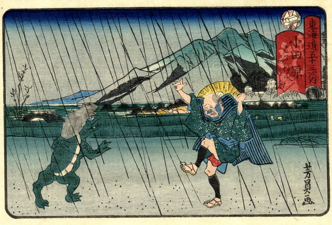

雨の小田原。河童に出会った男性が驚いている。河童は全身緑色で、背丈は人の半分ほど、甲羅を背負い指先には水掻きがみえる。
著作者：歌川芳員／出典：親書誌：U426_nichibunken_0235：東海道五十三次内小田原；トウカイドウゴジュウサンツギノウチオダワラ／日付：2010／資源識別子：U426_nichibunken_0235_0001_0000
Copyright (c)2010- International Research Center for Japanese Studies, Kyoto, Japan. All rights reserved.